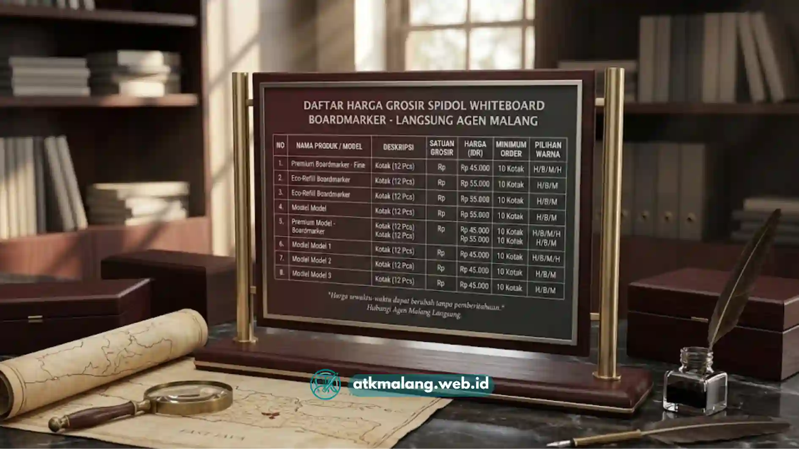

Bagi kepala sekolah, bendahara BOS, atau purchasing manager perusahaan, urusan pengadaan spidol boardmarker sering kali terasa lebih rumit dari yang seharusnya.
Bukan karena barangnya sulit dicari, tapi karena sulit menemukan distributor resmi Alat Tulis Kantor yang benar-benar bisa melayani pembelian skala karton besar.
Artikel ini menyajikan panduan lengkap sekaligus daftar harga spidol boardmarker grosir malang yang bisa dijadikan acuan sebelum mengajukan pengadaan resmi.
Daftar Isi
Mengapa Sekolah dan Perusahaan Membutuhkan Distributor Resmi, Bukan Sekadar Toko Eceran
Perbedaan mendasar antara membeli dari toko eceran biasa dan distributor spidol whiteboard malang yang resmi terletak pada tiga hal: legalitas dokumen, konsistensi stok, dan jaminan purna jual.
Toko eceran umumnya tidak bisa menerbitkan faktur pajak yang dibutuhkan untuk pertanggungjawaban anggaran BOS maupun laporan keuangan perusahaan.
Sementara pengadaan resmi Alat Tulis Kantor hampir selalu mensyaratkan dokumen tersebut sebagai bukti transaksi.
Legalitas dan Jaminan Kredibilitas Bisnis
ATK Malang beroperasi sebagai entitas usaha resmi ber-NPWP, sehingga setiap transaksi spidol boardmarker grosir dapat disertai bukti pembelian yang sah.
Bukti ini sangat esensial dan dapat dipertanggungjawabkan dalam audit maupun pelaporan anggaran sekolah serta operasional perusahaan.
Ini menjadi pembeda penting bagi purchasing manager yang mengutamakan kepatuhan administratif dalam setiap proses pengadaan.
Ketersediaan Stok Fisik di Gudang Utama Malang
Salah satu keluhan paling umum saat berurusan dengan reseller online adalah stok yang ternyata kosong setelah pesanan dikonfirmasi.
ATK Malang menjaga ketersediaan stok fisik spidol boardmarker warna hitam, biru, dan merah secara rutin di gudang utama Malang.
Sehingga pesanan Alat Tulis Kantor dalam jumlah besar sekalipun dapat diproses tanpa harus menunggu kedatangan barang dari luar kota.
Kemudahan Klaim Garansi Produk Bermasalah
Produk spidol yang rusak produksi atau tintanya sudah kering saat pertama kali dibuka bisa langsung diajukan klaim garansi tanpa proses berbelit.
Kebijakan ini penting terutama untuk pembelian skala karton, di mana risiko mendapati satu-dua unit cacat produksi tetap mungkin terjadi.
Meski sudah melalui quality control pabrik, dukungan kami menjamin keamanan anggaran Anda.
Testimoni dari Tim Purchasing Sekolah di Malang
Sejumlah sekolah besar di Malang Raya telah menjadikan ATK Malang sebagai mitra pengadaan tetap untuk kebutuhan ruang kelas dan kantor.
Khususnya karena konsistensi harga dan ketepatan waktu pengiriman menjelang tahun ajaran baru maupun periode ujian.

Skema harga grosir spidol transparan dan kompetitif.Daftar Harga Paket Grosir Spidol Boardmarker Terlengkap
Berikut rincian paket pengadaan alat tulis khusus kategori spidol boardmarker yang paling banyak dipesan oleh instansi dan sekolah di Malang Raya:
| Nama Produk/Merk | Isi Per Karton | Harga Per Lusin (Eceran) | Harga Grosir (Min. 5 Lusin) | Skema Pembayaran B2B | Keunggulan Produk |
|---|---|---|---|---|---|
| Snowman Boardmarker Refillable | 12 lusin | Rp120.000 | Rp105.000 | Tempo 14–30 hari / Tunai | Refillable, tinta dry-wipe, low odor |
| Artline Boardmarker Standard | 10 lusin | Rp110.000 | Rp98.000 | Tempo 14 hari / Tunai | Mata serat kuat, tahan tekanan tulis |
| ATK Malang Housebrand Ekonomis | 15 lusin | Rp95.000 | Rp85.000 | Tunai / Tempo khusus instansi | Harga paling kompetitif, cocok pemakaian massal |
Harga grosir di atas berlaku untuk pembelian minimal 5 lusin per varian, dan diskon tambahan tersedia untuk pemesanan skala karton penuh.
Skema pembayaran tempo umumnya diperuntukkan bagi instansi sekolah negeri, yayasan pendidikan, dan perusahaan yang terverifikasi.
Cara Mengajukan Pengadaan Skala Karton ke ATK Malang
Proses pengadaan Alat Tulis Kantor dirancang agar tidak membebani tim purchasing dengan birokrasi berlebihan. Berikut alur singkatnya:
- Konsultasi kebutuhan: Sampaikan estimasi jumlah karton dan varian warna yang dibutuhkan melalui WhatsApp B2B.
- Penawaran harga resmi: Tim ATK Malang mengirimkan surat penawaran (quotation) lengkap dengan rincian harga.
- Konfirmasi skema pembayaran: Pilih antara tunai langsung atau skema tempo sesuai kebijakan internal instansi.
- Pengiriman ke gudang/sekolah: Barang dikirim langsung ke lokasi tujuan di seluruh Malang Raya tanpa biaya tambahan.
- Serah terima dan faktur: Faktur pajak dan bukti serah terima diberikan sebagai dokumen resmi.
Pengadaan yang Tepat Dimulai dari Distributor yang Tepat
Memilih distributor spidol whiteboard malang yang resmi bukan hanya soal mendapatkan harga termurah.
Melainkan memastikan seluruh proses pengadaan Alat Tulis Kantor berjalan tanpa hambatan administratif di kemudian hari.
Dengan daftar harga transparan dan skema pembayaran yang fleksibel, ATK Malang berkomitmen menjadi mitra pengadaan jangka panjang.